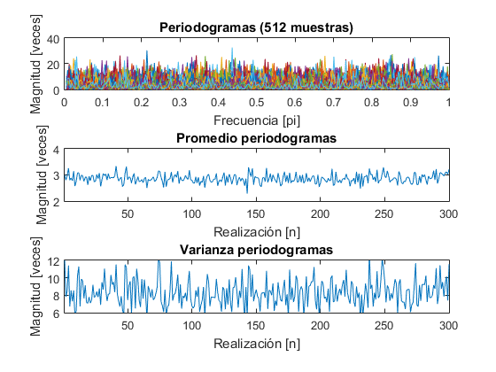
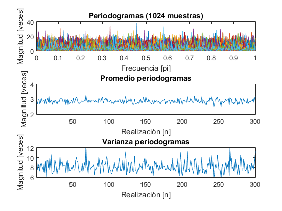
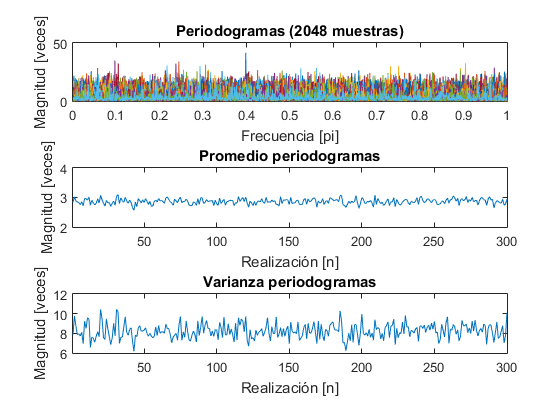
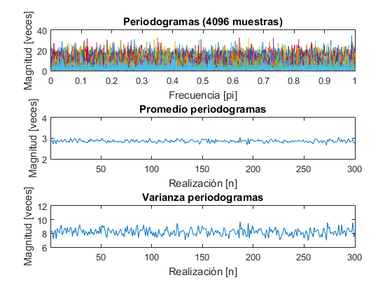
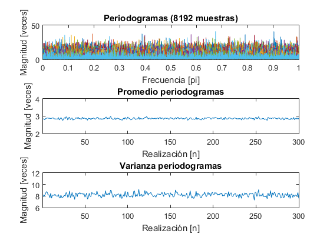
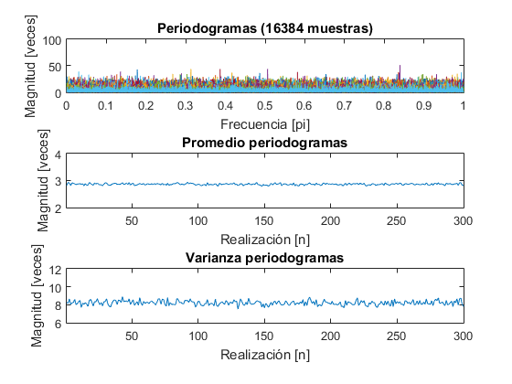

Trabajo Práctico 2
Estimación Espectral
Comprobar sesgo y varianza de los métodos
Contents
Ejercicio 1
Periodograma
varianza = 9; R = 300; % Realizaciones N = zeros(6, 1); % Muestras for i = 1:length(N) N(i) = 2^(8 + i); end rows = 3; cols = 1; for i = 1:length(N) x = sqrt(varianza) * randn(N(i), R); X = periodogram(x); [Xrows, ~] = size(X); P = transpose((1:Xrows) / Xrows); clear x; X_ = transpose(mean(X, 1)); Y_ = transpose(var(X, 0, 1)); P_ = transpose(1:length(X_)); figure(i); subplot(rows, cols, 1); plot(P, X(:,1)); title(strcat('Periodogramas (', num2str(N(i)) ,' muestras)')); ylabel('Magnitud [veces]'); xlabel('Frecuencia [pi]'); hold on; for j = 2:R; plot(P, X(:,j)); end; clear j; hold off; subplot(rows, cols, 2); plot(P_, X_); title('Promedio periodogramas'); ylabel('Magnitud [veces]'); xlabel('Realización [n]'); axis([1, length(X_), sqrt(varianza) - 1, sqrt(varianza) + 1]); subplot(rows, cols, 3); plot(P_, Y_); title('Varianza periodogramas'); ylabel('Magnitud [veces]'); xlabel('Realización [n]'); axis([1, length(X_), varianza - sqrt(varianza), varianza + sqrt(varianza)]); clear X P X_ Y_ P_; end; clear i;     
Puede notarse que si bien tanto la media como la varianza disminuyen en rango, es decir, convergen, la media converge a una mayor rapidez.
Ejercicio 2
Bartlet
Ejercicio 3
Welch
close all;